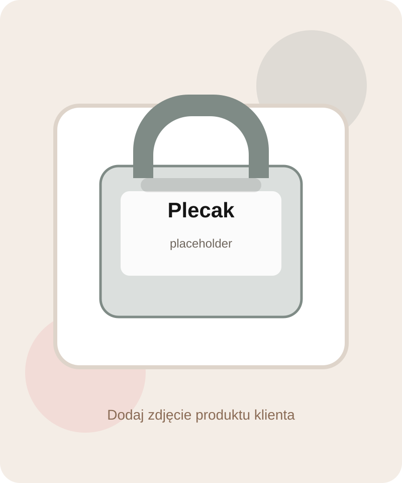
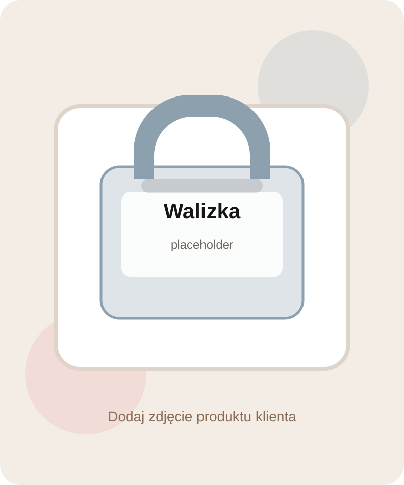
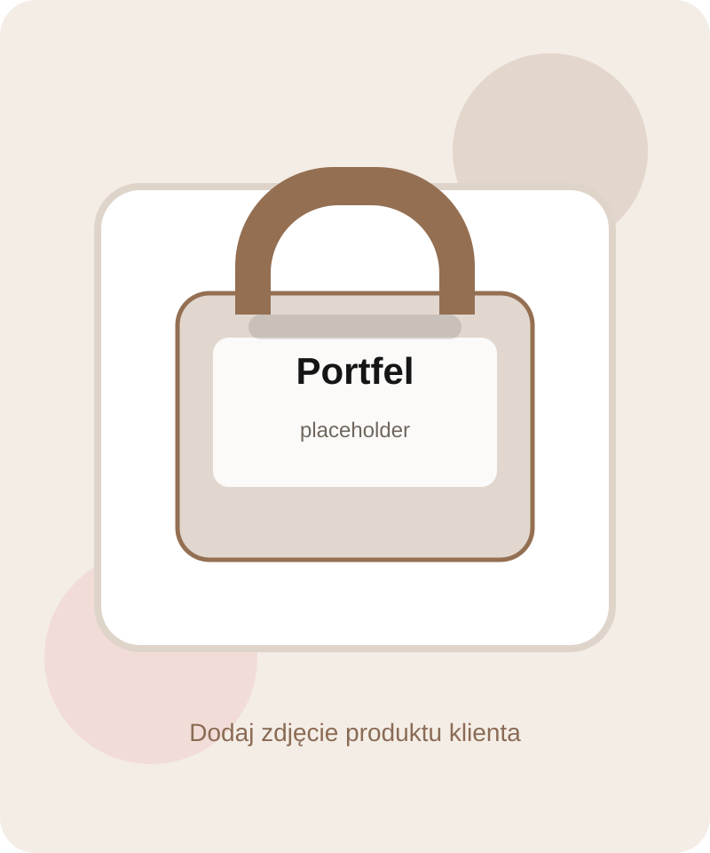
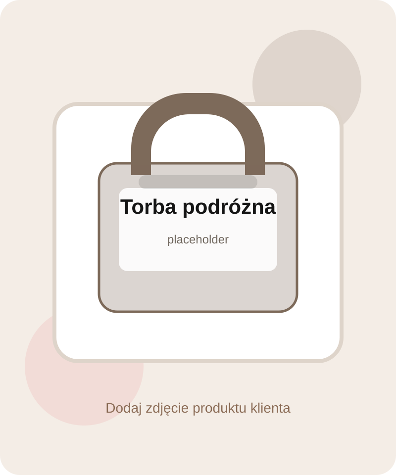

Torebki
Listonoszki, shopperki i modele codzienne.
Lżejszy, nowocześniejszy i gotowy pod Shoper front zbudowany wokół logo VASCO: czerń, ecru, taupe i subtelny czerwony akcent. Układ jest projektowany od telefonu w górę, żeby sprzedaż na mobile wreszcie wyglądała premium.
Spójna paleta pod logo VASCO i branżę torebek. Zamiast chaosu - premium porządek.
Sekcje są już przygotowane na realne zdjęcia, kolekcje i treści sprzedażowe.
Zamiast ciężkiego i rozwleczonego menu klient dostaje szybkie wejścia do głównych działów. Ten blok jest gotowy do podpięcia pod kategorie Shopera.
Listonoszki, shopperki i modele codzienne.

Miejskie, szkolne i podróżne.

Kabinowe i większe modele na wyjazd.

Praktyczne dodatki premium.

Organizacja i wygoda w podróży.

Modele biznesowe i do pracy.
Dodałem kompletne karty produktów z cenami demo, badge'ami i CTA. W Shoperze możesz je przepiąć pod realny listing lub wybrane produkty.
Nowy layout upraszcza ścieżkę klienta: mniej chaosu, większe zdjęcia, lepszy kontrast, bardziej czytelne CTA i dobrze widoczne informacje o dostawie, płatnościach i zwrotach.
„Sklep ma wyglądać premium, ale wciąż działać szybko i być łatwy do wdrożenia w Shoperze.”
To był główny cel tego redesignu.Podstrony regulaminu, polityki prywatności, dostawy, płatności, zwrotów, newslettera i informacji dla konsumenta są już uzupełnione treścią z Twoich plików.
Zobacz zwroty i reklamacjeUkład i pliki są rozdzielone na HTML, CSS, JS i gotowe do dalszego cięcia pod moduły własne w Shoper Storefront.
Instrukcja wdrożeniaZostawiłem format, który możesz podpiąć pod producentów lub dedykowane landing pages marek.